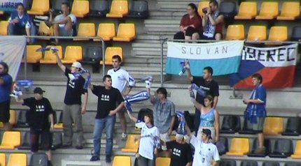
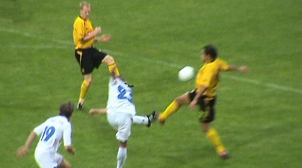
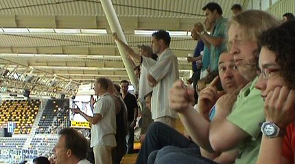

|
Roda JC - Slovan Liberec (0-0) 16 juli 2005 |
Roda JC
- Slovan Liberec (0-0) 16 juli 2005
De halve hanen zijn gelukkig weer terug! Ook waren er frieten.
Rodagirl Angelique en vriend Roger. Miss Parkstad vist momenteel in de
Rodameëdsjes-vijver.
16 jaar of ouder? Klik dan hier
>>>
Nauwelijks 50 Liberec-supporters.
De spelers komen nog steeds op onder de tune van Faithless'
INSOMNIA.
Gelukkig (nog) geen DJ Tiësto-shit in ons stadion!

De Tsjechen verwelkomen hun club.

Stevens kwam met een driedubbele verrassing: Lachambre kreeg de
voorkeur boven Filipovic op links, Vicelich was centrale verdediger en Sonko
mocht de hele wedstrijd meespelen.

De ruim 3000 toeschouwers zien een tamme wedstrijd. Liberec
beperkt zich
tot verdedigen en Roda komt nauwelijks tot een fatsoenlijke aanval.
Overtreding op Lachambre die de eerste van de twee Tsjechische
gele
kaarten oplevert. Bodor kreeg er een namens Roda.
Kah en Vicelich bereiden zich voor op een vrije trap van Sergio.
Kah schuwt
het betere trek-en duwwerk niet.
Een van de spaarzame kansen. Hier drukt Sergio af, maar de bal
belandt
in de armen van de keeper.
In de tweede helft moet Kujovic een keer flink ingrijpen.
Lachambre staat een paar minuten buitenspel voor een behandeling
aan
een gelaats-kwetsuur. Een hechting bleek noodzakelijk en was snel
aangebracht maar de Portugese scheidsrechter eiste dat Lachambre een
nieuw shirtje aantrok vanwege bloedvlekken. Dat shirt bleek niet voorhanden
waarna Atteveld de bloedspetters wegwaste met water uit de drinkbidons.
Sonko heeft zijn man omver gelopen. Er werden onduidelijke
Sonko-liedjes
gezongen in Z16. Hij schijnt hier erg geliefd te zijn ;-)
Pas in de slotfase wordt Liberecs gevaarlijkste speler
ingebracht: Holosko.
Sonko ontsnapt aan geel.
0-0 is een teleurstellende uitslag maar omdat er geen uitgoal is
gescoord
door Liberec zijn de kansen voor Roda in Tsjechië nog lang niet verkeken.
Meteen na afloop van de wedstrijd worden de lijnen letterlijk weg-gevaagd
voor de volgende WMC-dag.
De Kickoff bleek gesloten wat erg jammer is voor het sociale na-spel. Wat
opviel was dat de toevoeging "HUISDIEREN" van de shirts is verdwenen!
Dit
hangt samen met de richtlijnen van de UEFA die minder ruimte tolereert
voor reclame-uitingen.